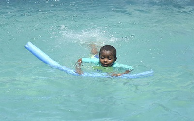

We offer a wide range of extra curricular activities in
Sports, Art, Science and Technology
Football
Football develops agility, speed and stamina and also teaches children the
importance
of teamwork. It also helps children's physical and social development.
Ballet
Ballet helps children develop co-ordination of mind and body. This
team,
we will nurture their ability to focus and maintain
intense concentration.
Chess
Chess is a board game with essential ways of helping children grow
mentally.
It improves concentration and memory, this term we will be
learning the ability.
Computing / ICT
An educational and fun group where children learn computing skills needed
for the
21st century.pupls will learn to code, create games
using technological tools.

Swimming
Swimming is a life skill that energizes the whole body, helping it to
keep
it fit in a whole way! it develops their muscles and aids safety
in days of danger.
Violin
The violin is the standard feature of every Orchestra.Learning to play the
violin helps
to develop fine motor skills as well as
concentration.